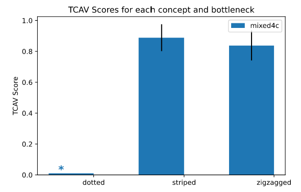

En cours de traduction.
10.3 - Détecter les concepts
Auteur: Fangzhou Li @ Université de Californie, Davis
Jusqu’à présent, nous avons rencontré de nombreuses méthodes pour expliquer les modèles “boîte noire” à travers l’attribution de caractéristiques. Cependant, il existe certaines limitations concernant l’approche basée sur les caractéristiques. Premièrement, les caractéristiques ne sont pas nécessairement conviviales en termes d’interprétabilité. Par exemple, l’importance d’un seul pixel dans une image ne transmet généralement pas beaucoup d’interprétation significative. Deuxièmement, l’expressivité d’une explication basée sur les caractéristiques est limitée par le nombre de caractéristiques.
L’approche basée sur les concepts aborde les deux limitations mentionnées ci-dessus. Un concept peut être n’importe quelle abstraction, comme une couleur, un objet, ou même une idée. Étant donné n’importe quel concept défini par l’utilisateur, bien qu’un réseau neuronal puisse ne pas être explicitement entraîné avec le concept donné, l’approche basée sur les concepts détecte ce concept intégré dans l’espace latent appris par le réseau. En d’autres termes, l’approche basée sur les concepts peut générer des explications qui ne sont pas limitées par l’espace de caractéristiques d’un réseau neuronal.
Dans ce chapitre, nous nous concentrerons principalement sur l’article “Testing with Concept Activation Vectors (TCAV)” de Kim et al.1
10.3.1 - Test avec Vecteurs d’Activation de Concept (TCAV : Testing with Concept Activation Vectors)
TCAV est proposé pour générer des explications globales pour les réseaux neuronaux, mais, en théorie, cela devrait également fonctionner pour tout modèle où il est possible de prendre une dérivée directionnelle. Pour tout concept donné, TCAV mesure l’étendue de l’influence de ce concept sur la prédiction du modèle pour une certaine classe. Par exemple, TCAV peut répondre à des questions telles que comment le concept de “rayé” influence un modèle classifiant une image comme un “zèbre”. Puisque TCAV décrit la relation entre un concept et une classe, au lieu d’expliquer une seule prédiction, il fournit une interprétation globale utile pour le comportement général d’un modèle.
10.3.1.1 - Vecteur d’Activation de Concept (CAV : Concept Activation Vector)
Un CAV est simplement la représentation numérique qui généralise un concept dans l’espace d’activation d’une couche d’un réseau neuronal. Un CAV, noté \(v_l^C\), dépend d’un concept \(C\) et d’une couche d’un réseau neuronal \(l\), où \(l\) est également appelée un goulot d’étranglement du modèle. Pour calculer le CAV d’un concept \(C\), d’abord, nous devons préparer deux ensembles de données : un ensemble de données concept qui représente \(C\) et un ensemble de données aléatoires qui consiste en des données arbitraires. Par exemple, pour définir le concept de “rayé”, nous pouvons collecter des images d’objets rayés comme l’ensemble de données concept, tandis que l’ensemble de données aléatoires est un groupe d’images aléatoires sans rayures. Ensuite, nous ciblons une couche cachée \(l\) et entraînons un classificateur binaire qui sépare les activations générées par l’ensemble concept de celles générées par l’ensemble aléatoire. Le vecteur des coefficients de ce classificateur binaire entraîné est alors le CAV \(v_l^C\). En pratique, nous pouvons utiliser un modèle SVM ou de régression logistique comme classificateur binaire. Enfin, étant donné une entrée d’image \(x\), nous pouvons mesurer sa “sensibilité conceptuelle” en calculant la dérivée directionnelle de la prédiction dans la direction du CAV unitaire :
\[S_{C,k,l}(x)=\nabla h_{l,k}(\hat{f}_l(x))\cdot v_l^C\]
où \(\hat{f}_l\) mappe l’entrée \(x\) sur le vecteur d’activation de la couche \(l\) et \(h_{l,k}\) mappe le vecteur d’activation sur la sortie logit de la classe \(k\).
Mathématiquement, le signe de \(S_{C,k,l}(x)\) dépend uniquement de l’angle entre le gradient de \(h_{l,k}(\hat{f}_l(x))\) et \(v_l^C\). Si l’angle est supérieur à \(90\) degrés, \(S_{C,k,l}(x)\) sera positif, et si l’angle est inférieur à 90 degrés, \(S_{C,k,l}(x)\) sera négatif. Étant donné que le gradient \(\nabla h_{l,k}\) pointe vers la direction qui maximise la sortie le plus rapidement, la sensibilité conceptuelle \(S_{C,k,l}\), intuitivement, indique si \(v_l^C\) pointe vers la direction similaire qui maximise \(h_{l,k}\). Ainsi, \(S_{C,k,l}(x)>0\) peut être interprété comme le concept \(C\) encourageant le modèle à classer \(x\) dans la classe \(k\).
Test avec des CAVs (TCAV : Testing with CAVs)
Dans le dernier paragraphe, nous avons appris comment calculer la sensibilité conceptuelle d’un seul point de données. Cependant, notre objectif est de produire une explication globale qui indique une sensibilité conceptuelle globale d’une classe entière. Une approche très simple réalisée par TCAV consiste à calculer le ratio d’entrées avec des sensibilités conceptuelles positives par rapport au nombre d’entrées pour une classe :
\[TCAV_{Q,C,k,l}=\frac{|{x\in X_k:S_{C,k,l}(x)>0}|}{|X_k|}\]
Revenant à notre exemple, nous sommes intéressés par la manière dont le concept de “rayé” influence le modèle lors de la classification d’images comme “zèbre”. Nous collectons des données étiquetées comme “zèbre” et calculons la sensibilité conceptuelle pour chaque image d’entrée. Puis, le score TCAV du concept “rayé” avec la classe prédite “zèbre” est le nombre d’images “zèbre” ayant des sensibilités conceptuelles positives divisé par le nombre total d’images “zèbre”. Autrement dit, un \(TCAV\) avec \(C=\)“rayé” et \(k=\)“zèbre” égal à \(0,8\) indique que \(80%\) des prédictions pour la classe “zèbre” sont positivement influencées par le concept de “rayé”.
Cela semble génial, mais comment savons-nous que notre score TCAV est significatif ? Après tout, un CAV est formé par des ensembles de données de concepts sélectionnés par l’utilisateur et de données aléatoires. Si les ensembles de données utilisés pour former le CAV sont mauvais, l’explication peut être trompeuse et inutile. Ainsi, nous effectuons un simple test de signification statistique pour aider TCAV à devenir plus fiable. C’est-à-dire, au lieu de former seulement un CAV, nous formons plusieurs CAVs en utilisant différents ensembles de données aléatoires tout en gardant l’ensemble de données concept le même. Un concept significatif devrait générer des CAVs avec des scores TCAV cohérents. La procédure de test plus détaillée est montrée ci-dessous :
Possible problème de traduction du sens dans le paragraphe ci-sessus : After all, a CAV is trained by user-selected concept and random datasets.
- Collecter \(N\) ensembles de données aléatoires, où il est recommandé que \(N\) soit au moins \(10\).
- Fixer l’ensemble de données concept et calculer le score TCAV en utilisant chacun des \(N\) ensembles de données aléatoires.
- Appliquer un test \(t\) à deux queues aux \(N\) scores TCAV contre d’autres \(N\) scores TCAV générés par un CAV aléatoire. Un CAV aléatoire peut être obtenu en choisissant un ensemble de données aléatoire comme ensemble de données concept.
Possible problème de traduction du sens dans le paragraphe ci-sessus : a two-sided t-test to
Il est également suggéré d’appliquer une méthode de correction de tests multiples à cette étape si vous avez plusieurs hypothèses. L’article original utilise la correction de Bonferroni, et ici le nombre d’hypothèses est égal au nombre de concepts que vous testez.
10.3.2 - Exemple
Voyons un exemple disponible sur le dépôt GitHub de TCAV. En suivant l’exemple de la classe “zèbre” que nous avons utilisé précédemment, on constate le résultat des scores TCAV des concepts “rayé”, “zigzag” et “à pois”. Le classificateur d’images que nous utilisons est InceptionV32, un réseau neuronal convolutif formé en utilisant les données ImageNet. Chaque ensemble de données concept ou aléatoire contient \(50\) images, et nous utilisons \(10\) ensembles de données aléatoires pour le test de signification statistique avec un niveau de signification de \(0,05\). Nous n’utilisons pas la correction de Bonferroni, car nous n’avons que quelques ensembles de données aléatoires, mais il est recommandé d’ajouter la correction en pratique pour éviter les fausses découvertes.

En pratique, vous pouvez vouloir utiliser plus de 50 images dans chaque ensemble de données pour former de meilleurs VACs. Vous pouvez également vouloir utiliser plus de 10 ensembles de données aléatoires pour effectuer de meilleurs tests de signification statistique. Vous pouvez également appliquer TCAV à plusieurs goulots d’étranglement pour avoir une observation plus approfondie.
10.3.3 - Avantages
Puisque les utilisateurs sont uniquement tenus de collecter des données pour former les concepts qui les intéressent, TCAV ne nécessite pas qu’ils aient une expertise en apprentissage automatique. Cela permet à TCAV d’être extrêmement utile pour les experts de domaine afin d’évaluer leurs modèles de réseau neuronal complexes.
Une autre caractéristique unique de TCAV est sa capacité de personnalisation activée par les explications de TCAV au-delà de l’attribution de caractéristiques. Les utilisateurs peuvent étudier n’importe quel concept tant que le concept peut être défini par son ensemble de données concept. En d’autres termes, un utilisateur peut contrôler l’équilibre entre la complexité et l’interprétabilité des explications en fonction de ses besoins : si un expert de domaine comprend bien le problème et le concept, il peut façonner l’ensemble de données concept en utilisant des données plus compliquées pour générer une explication plus détaillée.
Enfin, TCAV génère des explications globales qui relient les concepts à n’importe quelle classe. Une explication globale vous donne une idée de savoir si votre modèle global se comporte correctement ou non, ce qui ne peut généralement pas être fait par des explications locales. Et ainsi, TCAV peut être utilisé pour identifier les “défauts” ou les “points aveugles” potentiels survenus pendant la formation du modèle : peut-être que votre modèle a appris à pondérer un concept de manière inappropriée. Si un utilisateur peut identifier ces concepts mal appris, il peut utiliser cette connaissance pour améliorer son modèle. Disons qu’il y a un classificateur qui prédit “zèbre” avec une grande précision. Cependant, TCAV montre que le classificateur est plus sensible au concept de “à pois” plutôt que de “rayé”. Cela pourrait indiquer que le classificateur est accidentellement formé par un ensemble de données déséquilibré, vous permettant d’améliorer le modèle en ajoutant soit plus d’images de “zèbres rayés” soit moins d’images de “zèbres à pois” à l’ensemble de données d’entraînement.
10.3.4 - Inconvénients
TCAV pourrait mal fonctionner sur des réseaux neuronaux moins profonds. Comme de nombreux articles l’ont suggéré3, les concepts dans les couches plus profondes sont plus séparables. Si un réseau est trop peu profond, ses couches peuvent ne pas être capables de séparer clairement les concepts de sorte que TCAV n’est pas applicable.
Puisque TCAV nécessite des annotations supplémentaires pour les ensembles de données de concept, cela peut être très coûteux pour des tâches qui n’ont pas de données étiquetées prêtes à l’emploi. Une alternative possible à TCAV lorsque l’annotation est coûteuse est d’utiliser ACE, dont nous parlerons brièvement dans la section suivante.
Bien que TCAV soit salué pour sa capacité de personnalisation, il est difficile à appliquer à des concepts trop abstraits ou généraux. Cela est principalement dû au fait que TCAV décrit un concept par son ensemble de données de concept correspondant. Plus un concept est abstrait ou général, comme “le bonheur”, plus le volume de données nécessaires est important pour former un VAC relatif à ce concept.
Bien que TCAV gagne en popularité dans son application aux données de type image, il a des applications relativement limitées pour les données textuelles et les données tabulaires.
Source de cette affirmation ?
10.3.5 - Autres approches basées sur les concepts
L’approche basée sur les concepts a gagné en popularité ces derniers temps, et il existe de nombreuses nouvelles méthodes inspirées de l’utilisation de concepts. Nous aimerions ici mentionner brièvement ces méthodes, et nous vous recommandons de lire les travaux originaux si vous êtes intéressés.
L’Explication Automatisée Basée sur les Concepts (ACE : Automated Concept-based Explanation)4 peut être vue comme la version automatisée de TCAV. ACE passe en revue un ensemble d’images d’une classe et génère automatiquement des concepts basés sur le regroupement de segments d’image.
Les modèles à goulot d’étranglement conceptuel (CBM : Concept bottleneck models)5 sont des réseaux neuronaux intrinsèquement interprétables. Un CBM est similaire à un modèle encodeur-décodeur, où la première moitié du CBM mappe les entrées aux concepts, et la seconde moitié utilise les concepts mappés pour prédire les sorties du modèle. Chaque activation de neurone de la couche de goulot d’étranglement représente alors l’importance d’un concept. De plus, les utilisateurs peuvent manipuler les activations des neurones du goulot d’étranglement pour générer des explications contrefactuelles du modèle.
Le blanchiment de concept (CW : Concept whitening)6 est une autre approche pour générer des classificateurs d’images intrinsèquement interprétables. Pour utiliser CW, on substitue une couche de normalisation, comme une couche de normalisation par lots, par une couche CW. Ainsi, CW est très utile lorsque les utilisateurs veulent transformer leurs classificateurs d’images pré-entraînés pour être intrinsèquement interprétables, tout en maintenant la performance du modèle. CW est fortement inspiré par la transformation de blanchiment, et nous vous recommandons vivement d’étudier les mathématiques derrière la transformation de blanchiment si vous êtes intéressés à en apprendre davantage sur CW.
10.3.6 - Logiciels
La librairie officielle de TCAV respose sur Tensorflow, mais il existe d’autres versions disponibles en ligne. Les carnets Jupyter, faciles d’emploi, sont également accessibles sur ce dépôt GitHUb.
Notes de bas de page
Kim, Been, Martin Wattenberg, Justin Gilmer, Carrie Cai, James Wexler, and Fernanda Viegas. “Interpretability beyond feature attribution: Quantitative testing with concept activation vectors (tcav).” In International conference on machine learning, pp. 2668-2677. PMLR (2018).↩︎
Szegedy, Christian, Vincent Vanhoucke, Sergey Ioffe, Jon Shlens, and Zbigniew Wojna. “Rethinking the inception architecture for computer vision.” In Proceedings of the IEEE conference on computer vision and pattern recognition, pp. 2818-2826 (2016).↩︎
Alain, Guillaume, and Yoshua Bengio. “Understanding intermediate layers using linear classifier probes.” arXiv preprint arXiv:1610.01644 (2016).↩︎
Ghorbani, Amirata, James Wexler, James Zou and Been Kim. “Towards automatic concept-based explanations.” Advances in Neural Information Processing Systems 32 (2019).↩︎
Koh, Pang Wei, Thao Nguyen, Yew Siang Tang, Stephen Mussmann, Emma Pierson, Been Kim, and Percy Liang. “Concept bottleneck models.” In International Conference on Machine Learning, pp. 5338-5348. PMLR (2020).↩︎
Chen, Zhi, Yijie Bei, and Cynthia Rudin. “Concept whitening for interpretable image recognition.” Nature Machine Intelligence 2, no. 12 (2020): 772-782.↩︎